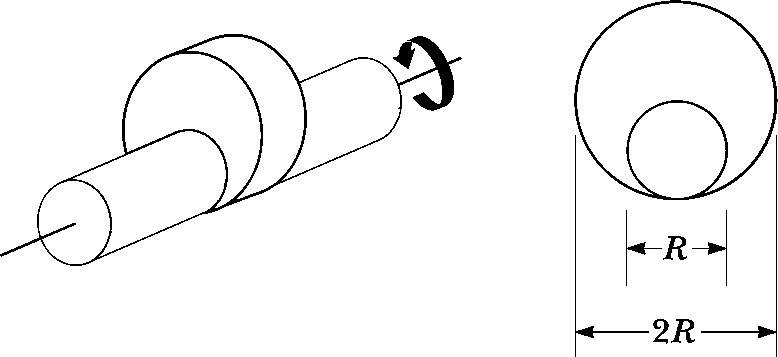
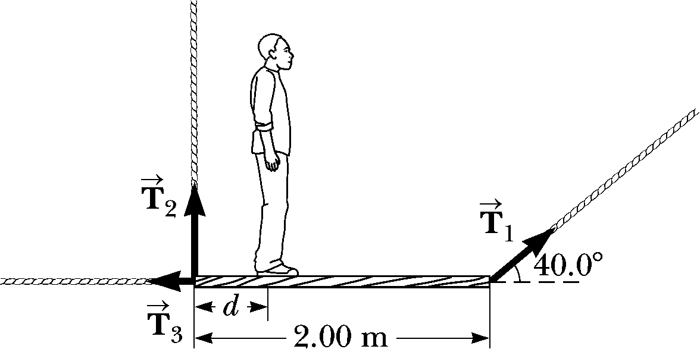
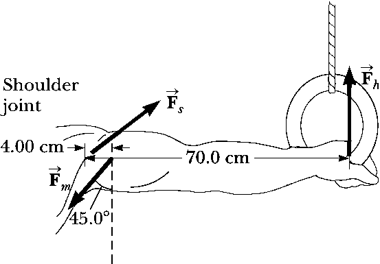

Homework 6 - Torque
Problem 6.1
In a manufacturing process, a large, cylindrical roller is used to flatten material fed beneath it. The diameter of the roller is 1.00 m, and, while being driven into rotation around a fixed axis, its angular position is expressed as \[\theta = 2.50 t^2 - 0.600t^3\] where \(\theta\) is in radians and \(t\) is in seconds.
- Find the maximum angular speed of the roller.
- What is the maximum tangential speed of a point on the rim of the roller?
- At what time t should the driving force be removed from the roller so that the roller does not reverse its direction of rotation?
- Through how many rotations has the roller turned between \(t = 0\) and the time found in part (c)?
Problem 6.3
A grinding wheel is in the form of a uniform solid disk of radius \(7.00~cm\) and mass \(2.00~kg\). It starts from rest and accelerates uniformly under the action of the constant torque of \(0.600~N\cdot m\) that the motor exerts on the wheel.
- How long does the wheel take to reach its final operating speed of \(1200~rev/min\)?
- Through how many revolutions does it turn while accelerating?
Problem 6.2
The combination of an applied force and a friction force produces a constant total torque of \(36.0~ N \cdot m\) on a wheel rotating about a fixed axis. The applied force acts for \(6.00~s\). During this time, the angular speed of the wheel increases from \(0\) to \(10.0~rad/s\). The applied force is then removed, and the wheel comes to rest in \(60.0~s\). Find
- the moment of inertia of the wheel
- the magnitude of the torque due to friction
- the total number of revolutions of the wheel during the entire interval of \(66.0~s\).
Problem 6.4
Many machines employ cams for various purposes, such as opening and closing valves. In the below figure, the cam is a circular disk of radius \(R\) with a hole of diameter \(R\) cut through it. As shown in the figure, the hole does not pass through the center of the disk. The cam with the hole cut out has mass \(M\). The cam is mounted on a uniform, solid, cylindrical shaft of diameter \(R\) and also of mass \(M\). What is the kinetic energy of the cam–shaft combination when it is rotating with angular speed \(v\) about the shaft’s axis?

Problem 6.5
A uniform plank of length \(2.00~m\) and mass \(30.0~kg\) is supported by three ropes as indicated by the vectors in the below figure. Find the tension in each rope when a \(700-N\) person is \(d = 0.500~m\) from the left end.

Problem 6.6
When a gymnast performing on the rings executes the iron cross, he maintains the position at rest with arms horizontal to the ground. In this maneuver, the gymnast’s feet are off the floor. The primary muscles involved in supporting this position are the latissimus dorsi (“lats”) and the pectoralis major (“pecs”). One of the rings exerts an upward force \(\vec{F}_h\) on a hand as shown in the below figure. The force \(\vec{F}_s\) is exerted by the shoulder joint on the arm. The latissimus dorsi and pectoralis major muscles exert a total force \(\vec{F}_m\) on the arm.
- Using the information in the figure, find the magnitude of the force \(\vec{F}_m\) for an athlete of weight \(750~N\).
- Suppose an athlete in training cannot perform the iron cross but can hold a position similar to the figure in which the arms make a \(45^\circ\) angle with the horizontal rather than being horizontal. Why is this position easier for the athlete?
